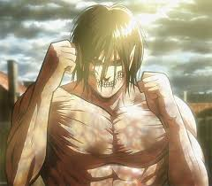
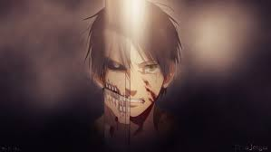
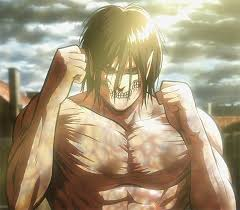
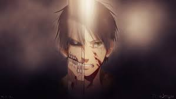

Eren Yeager, o titã de ataque
_character_image.png)
Eren Yeager é um ex-membro da Divisão de Reconhecimento e o principal protagonista de Attack on Titan. Ele morou no Distrito de Shiganshina com seus pais e sua irmã adotiva Mikasa Ackerman até a queda da Muralha Maria. Durante o incidente, Eren testemunhou impotentemente sua mãe sendo comida por um Titã. Este evento levaria ao ódio intenso de Eren pelos Titãs, quando ele jurou varrer todos eles da face da Terra. Logo depois seu pai, Grisha Yeager, o encontrou e deu-lhe a chave de seu porão, instruindo Eren a encontrá-la a todo custo e retomar a Muralha Maria. Ele então injetou em Eren a Injeção de Titã. No ano de 847, Eren, Mikasa e seu melhor amigo Armin Arlert juntaram-se ao 104º Esquadrão de Recrutas. Os três se formaram com Eren sendo o 5º melhor, e eles se juntaram a Divisão de Reconhecimento após a batalha do Distrito de Trost. Depois de encontrar o porão e desbloquear as memórias de seu pai, Eren aprendeu sobre a verdade sobre o que os Titãs são, assim como a história de Eldia e Marley. Eren então prometeu libertar sua casa de seu verdadeiro inimigo o resto da humanidade que vive do outro lado do oceano.
2013: Queda de Shiganshina
2013: Batalha de Trost
2013: Treinamento da 104° Tropa
2013: Batalha com a Titã Fêmea
2017: Confronto dos Titans
2018: Arco da Insurreição
2019: Retorno à Shiganshina
.jpg) 


